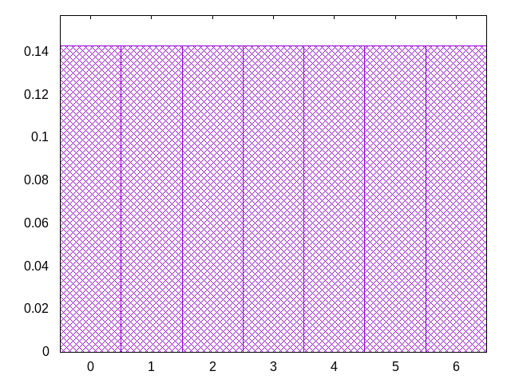

full random but with drought protection
identical to wet2 for low history sizes (up to 14?), but unlike wet2 it will still balance counts on larger histories
tjsolizltzjsoiztosljisjziltolijszotizsjlotolsitzjiltzosjlitsjozsltzojilsjtoizitjolzssziotjltjsozilzojtstsliolzjzltisioosjlsjziitoltjizljsztjsoollzitsioitzjtsljoszltoztiljilsjjozsitjozzstoiitjlljsozsoztijztslsolojzltizilososijjitizlttoiljszsjtojllzszisoittzitljoszlsotlijlizjsjozjotistzstooijjlljztisozzliotsstjloszlzitiloojszojisizlttoiljslsjtijltzlzjsoiotzitszijzlsotlstlizjijoljojzstsstooiojjljztitizzlzolsstsolszjzitilootjzooisiiltlosljslzjtijtljsztslioozitzsijzztltsljisloijotjijzszostojsojoljltitizzlzjtistsolszzojlizosttjooiiziltlosloslijlijttjszzslsioozttjizjzltzslsitloijjitijszzosotjsojoljljotiizlzsttjlszosztzjlilosztojoiitioslzltoslislijtjtiozslsizojztstzjiltzzlsioltijjjilisztososjsojoojljjtizllzsttozstzojizlztlisszojotioitjlslloiolsliitjtiozszslsijzttjzjoltzzzsilitsijjoliiztlsosjsojoojsjjtlozltsittzolzzjjitzoltsszzojsioittljlloiolsliiljtiosztsosilztsjzjtzlzozzilitsijjojiiztlsislsojoojsjjtlojstlzttioszzljitzozttsjzojsoliottslloilizlijlijiosztsosslttlzijozlzszztoiljijjtziiozjsislsoti
bagginess: 0.0075
bagginess6: 0.1564
distribution1_maxgap: 1.1000000000011001e-05
distribution2_maxgap: 0.0005560005560005556
distribution3_maxgap: 0.00013500027000053986
distribution4_maxgap: 3.000009000027001e-05
diversity: 4.7
entropy: 11.600
evenness_diff: 6.318
evenness_same: 5.292
maxdrought: 54.3
maxflood: 6
peakdrought: 0.0
repchance: 0.1344
seq4_coverage: 1.0000
seq4_follow: 6.081
distribution1_graph:

similarity: (lower is more similar)
| 0.021 | balanced_long_mul_pure |
| 0.024 | balanced_long_add_pure |
| 0.027 | bag4 |
| 0.039 | shift21 |
| 0.040 | deepbag_window10 |
| 0.047 | balanced9 |
| 0.052 | bag3 |
| 0.056 | shift14 |
| 0.062 | shift10_5 |
| 0.062 | seamless_bag3_pure |
| 0.074 | deepbag_fixed10 |
| 0.088 | fullrandom_pure |
| 0.094 | deepbag_window7 |
| 0.114 | fullrandom |
| 0.116 | nes_pure |
| 0.130 | wet2_size100 |
| 0.137 | seamless_bag2_pure |
| 0.159 | nes |
| 0.170 | shift7 |
| 0.178 | bag2 |
| 0.308 | shirts2 |
| 0.339 | balanced7 |
| 0.361 | deepbag_fixed7 |
| 0.371 | wet2 |
| 0.371 | weight_lin_pure |
| 0.398 | weight2 |
| 0.417 | deepbag_window4 |
| 0.439 | balanced5 |
| 0.528 | shirts_smooth2 |
| 0.541 | seamless_deep_pure |
| 0.548 | wet3_size12 |
| 0.579 | weight |
| 0.805 | tgm |
| 0.812 | tgm_pure |
| 0.815 | deepbag_fixed4 |
| 0.877 | bag |
| 0.883 | bag_pure |
| 0.929 | shift3_5 |
| 0.948 | wet_pure |
| 1.081 | tgm_tap |
| 1.085 | tgm_tap_pure |
| 1.095 | wet |
| 1.185 | weight_exp |
| 1.219 | ti |
| 1.291 | weight_exp_pure |
| 1.478 | seamless_bag_pure |
| 1.830 | repeat_recent_pure |
| 2.051 | shirts |
| 2.267 | shirts_smooth |
| 3.325 | shift1_75 |
| 4.014 | repeat_last_pure |
| 9.661 | flatbag |
| 9.661 | flatbag_pure |